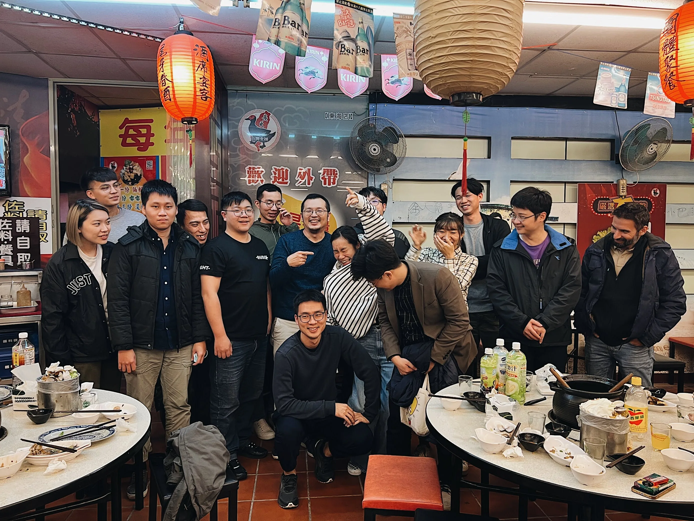
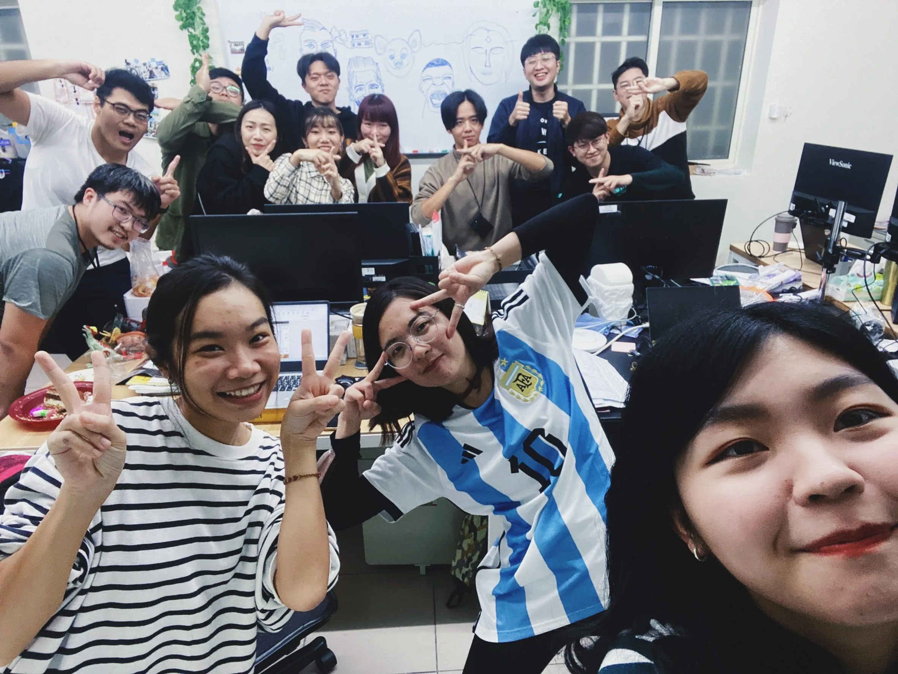
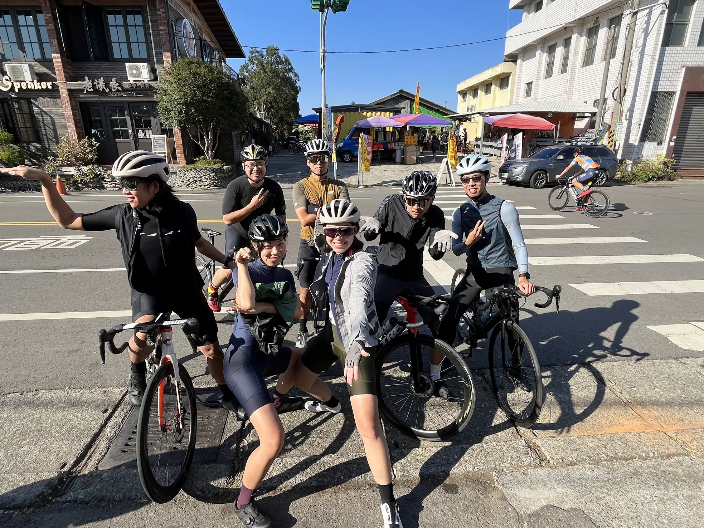
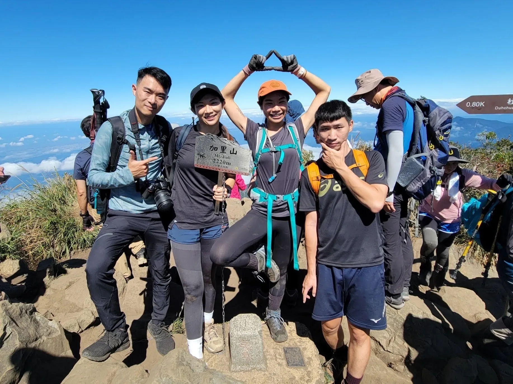
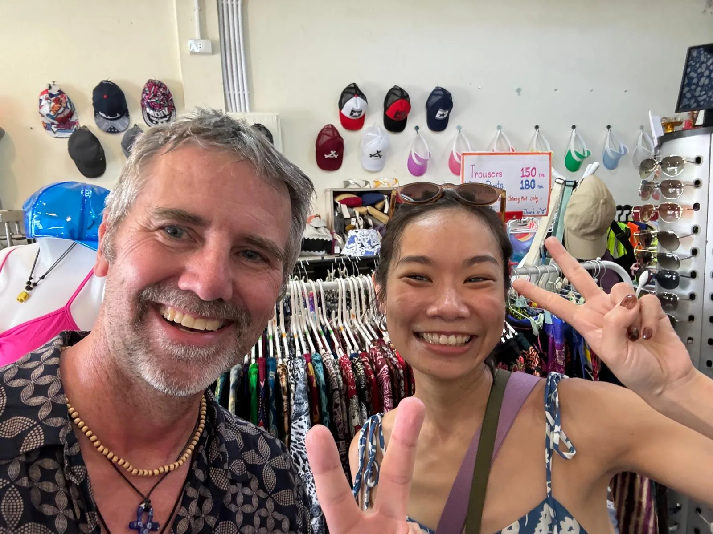
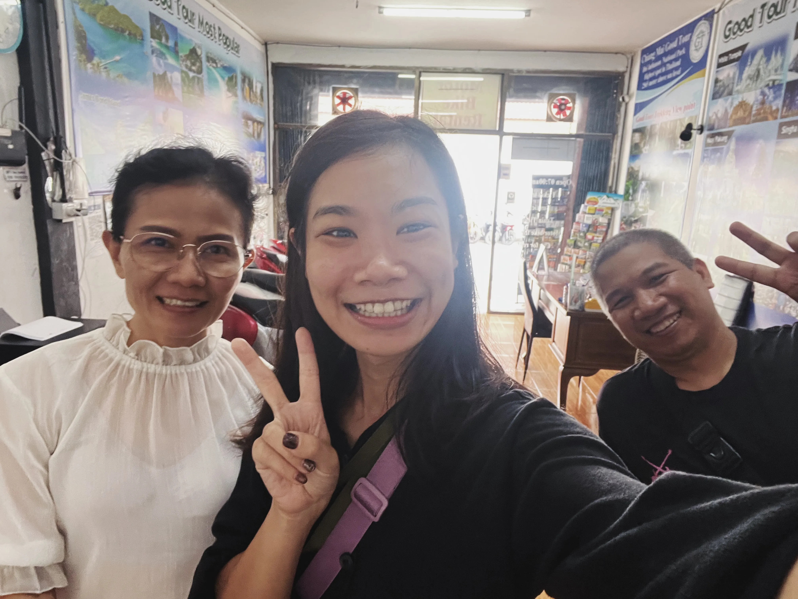

Hi, I'm Maggie, you can also call me Jiahui 嘉惠。
I'm a product manager and also a designer with extensive experience in product design and management. I started
my career as a industrial designer, and then switched to a UI/UX designer, where I learned about digital product
design in depth and focused on user experience optimization.
With the accumulation of experience and increasing interest in software and hardware integration and product
strategy, I gradually transitioned to the field of product management and cultivated overall product strategy
thinking.
I excel in leading scrum teams, product strategy and delivering user-centered solutions.
My Experiences
Industrial Designer (2012 - 2018)
Industrial design / Sketch / 3D model building / 3D printing / Cost control / Prototype development /
Manufacturing collaboration / Marketing.
#Solidworks #Rhino #Creo Parametric #AutoCAD #KeyShot
UI/UX Designer (2018 - 2022)
User research / User experience design / User interviews / Competitive product analysis / Cross-functional teams
cooperation / Wireframing / Interaction design / Usability testing.
#Sketch #Figma #Miro #Xmind #Draw.io #Webflow #Wordpress
Product Manager (2022 - 2024)
Product strategic / Product planning / Market and user research / Data driven / Product design / Agile method /
Scrum / Cross-functional teams cooperation / Stakeholder management / Risk management / Release management /
Problem-solving abilities / Communication skills.
#Notion #Jira #Miro #Firebase #Amplitude #OneSignal #Xmind #Python
Also me 👇🏼
I enjoy a harmonious relationship with my colleagues, we often gather for team dinners or casual hangouts,
bridging the gap between our software department and other teams.


I love outdoor activities like cycling, hiking, volleyball, badminton and swimming, but cycling has always been
my favorite! It makes me feel strong and relaxed, regardless of whether I achieve a personal record. Whether
before work or after hours, I enjoy riding with friends and occasionally participate in races, savoring the
experience no matter the outcome. As for mountain biking, I’m still working on overcoming my fears, it’s a new
journey!


I often travel with friends, but sometimes I like to travel alone, enjoy the solo adventures. Traveling alone
makes me getting know more about myself, making new friends, and knowing more different cultures.

